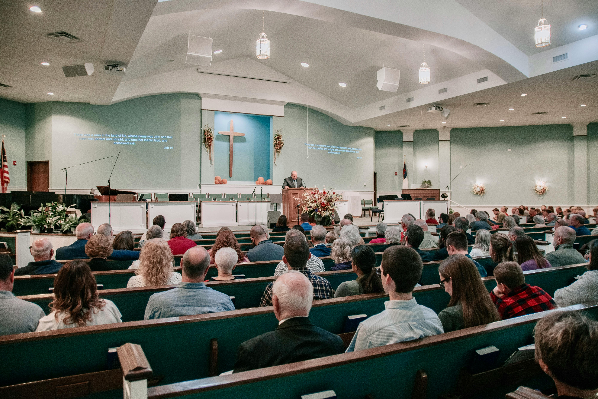

Mughodi Trust Church Podcasts
Subscribe to our podcasts and receive sermons automatically on your favorite podcast platform.

Explore our collection of inspiring messages and teachings from our pastoral team.
Pastor Joyce Meyer • August 15, 2024 • 95 min
Delve into the foundational doctrine of faith, explaining its importance in our daily lives and how it impacts our relationship with God
Discover how God's love can transform your heart and relationships, bringing healing and restoration..
Finding hope and strength in God during life's most challenging seasons and circumstances
Learn how to build stronger, more connected communities that reflect God's love and support one another.
Understanding the transformative power of prayer and how to develop a deeper prayer life
How to serve God and others with excellence, passion, and a heart of humility.
Delve into the foundational doctrine of faith, explaining its importance in our daily lives and how it impacts our relationship with God
Subscribe to our podcasts and receive sermons automatically on your favorite podcast platform.
Dr John Doe
Miss Lebo Mapuranga
Mrs Amanda Sithole
Mr Alex Smith